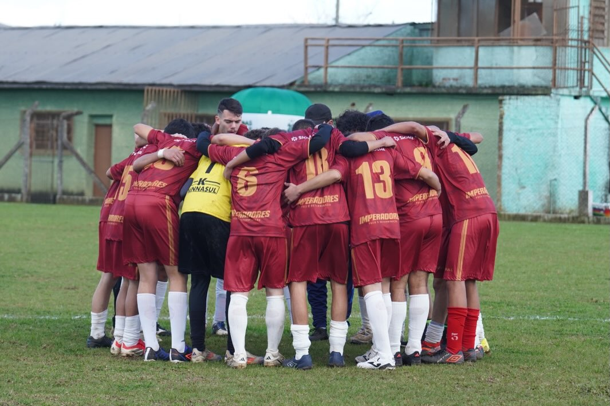
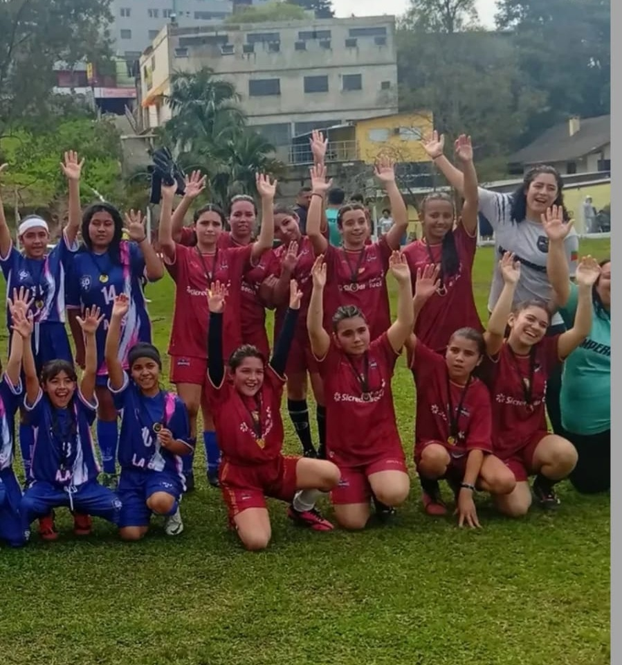
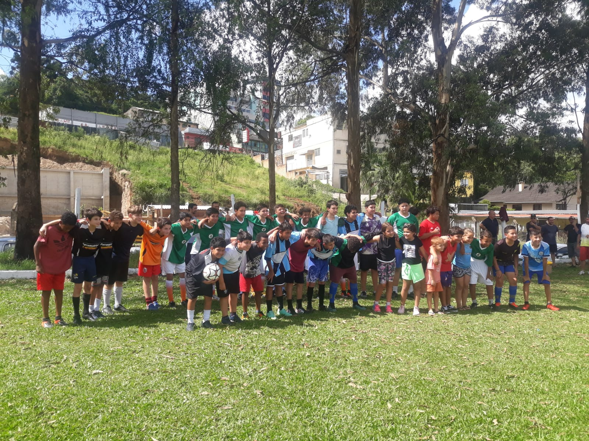
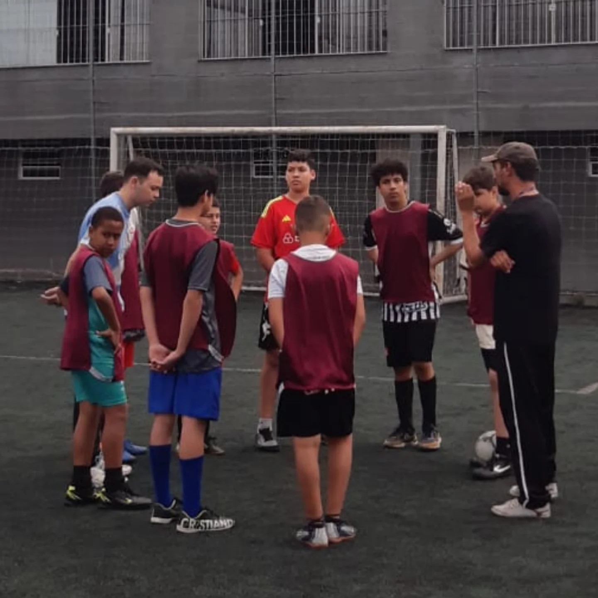
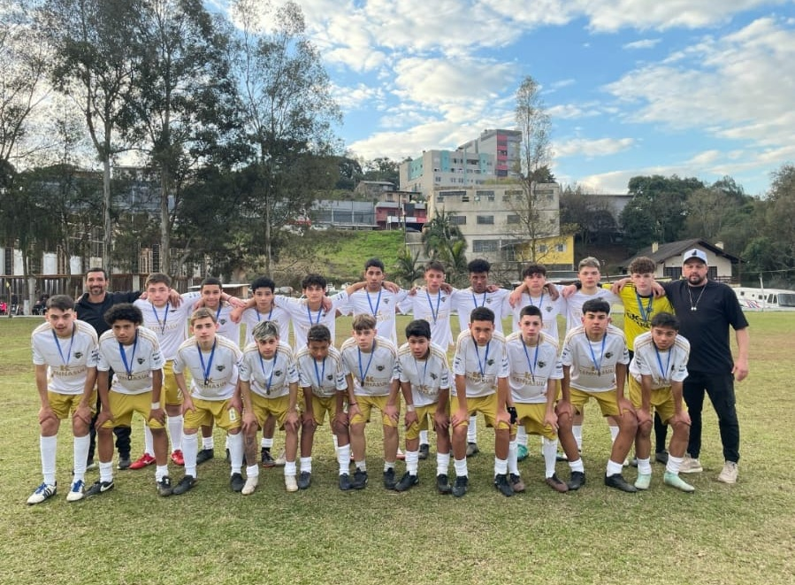

Missão
Promover o desenvolvimento social, humano e comunitário de crianças e adolescentes por meio do esporte, fortalecendo vínculos, pertencimento, disciplina e oportunidades.
Quem somos
O Projeto Imperadores nasceu da vontade de um grupo de meninos de continuar jogando futebol juntos. A busca por um espaço para o grupo se reunir levou aos primeiros treinos e, com o envolvimento de voluntários, a iniciativa começou a ganhar forma.
No início havia pouca estrutura, mas já existia o propósito de criar oportunidades, fortalecer vínculos e oferecer um lugar de pertencimento. Hoje, o esporte é o principal ponto de encontro de um trabalho voltado ao desenvolvimento social, à convivência e à formação humana.
Promover o desenvolvimento social, humano e comunitário de crianças e adolescentes por meio do esporte, fortalecendo vínculos, pertencimento, disciplina e oportunidades.
Consolidar-se como referência local em esporte e desenvolvimento social, ampliando o atendimento no contraturno escolar e oferecendo novas possibilidades de desenvolvimento para participantes e suas famílias.
Acolhimento, respeito, disciplina, pertencimento, compromisso, oportunidade, voluntariado e responsabilidade social.
Nossa atuação
Atendimento de crianças e adolescentes em diferentes etapas de formação esportiva, desde a iniciação até o desenvolvimento e rendimento, incluindo o futebol feminino.
Ampliação da atuação para atividades no contraturno escolar, criando novas oportunidades de convivência, aprendizagem, desenvolvimento social e formação.





Impacto
Apoie o Projeto Imperadores
Empresas, instituições e pessoas podem contribuir com estrutura, materiais, serviços, parcerias e apoio às atividades desenvolvidas pelo Projeto Imperadores.
Escaneie o QR Code para apoiar o Projeto Imperadores.
Contato
(54) 99920-7606
@projetoimperadores_ofc
Rua Flamingo, 150
Bairro Esplanada
Caxias do Sul — RS